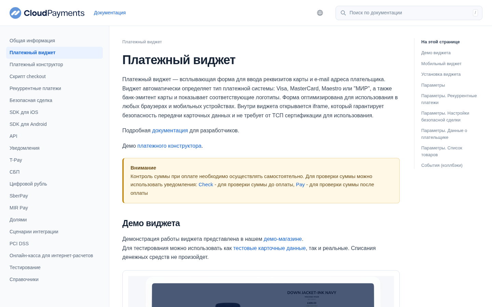
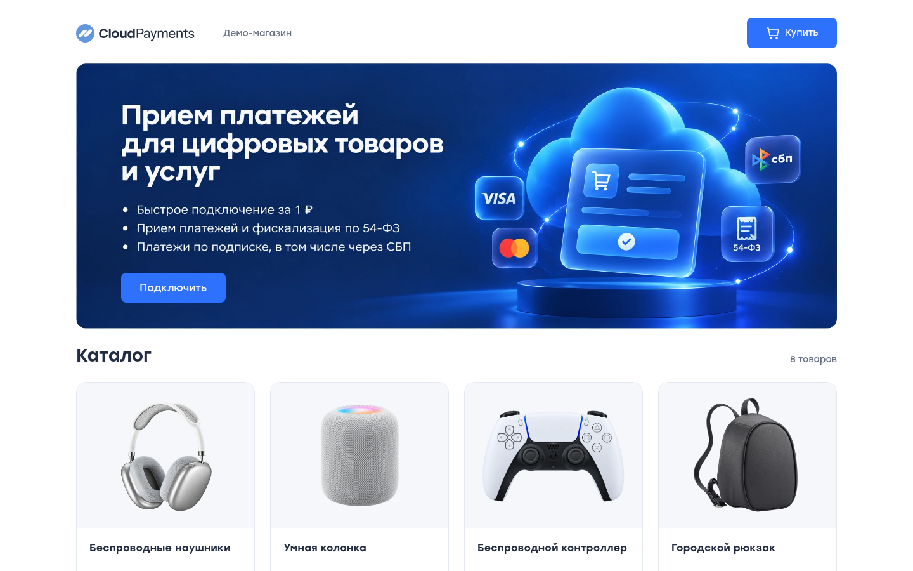
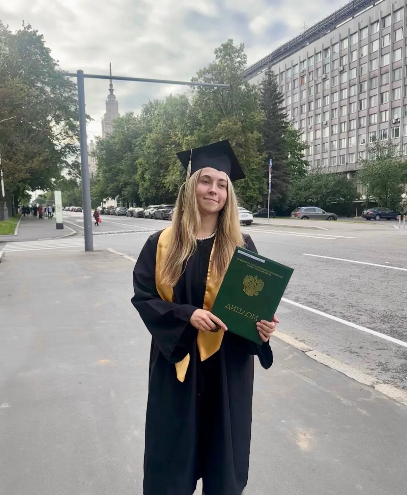
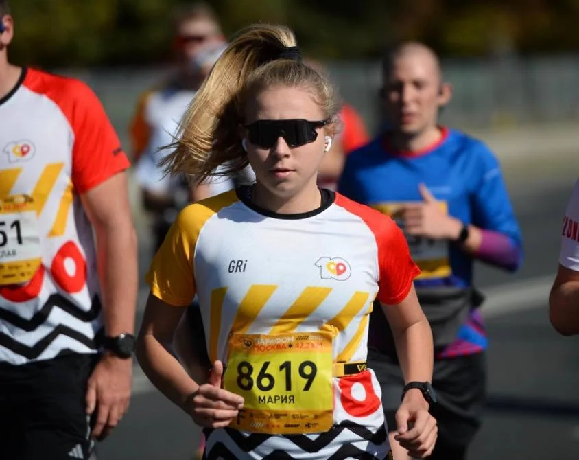
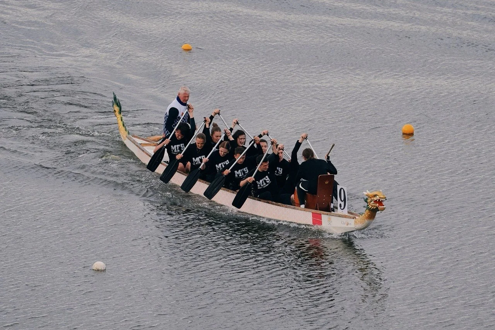
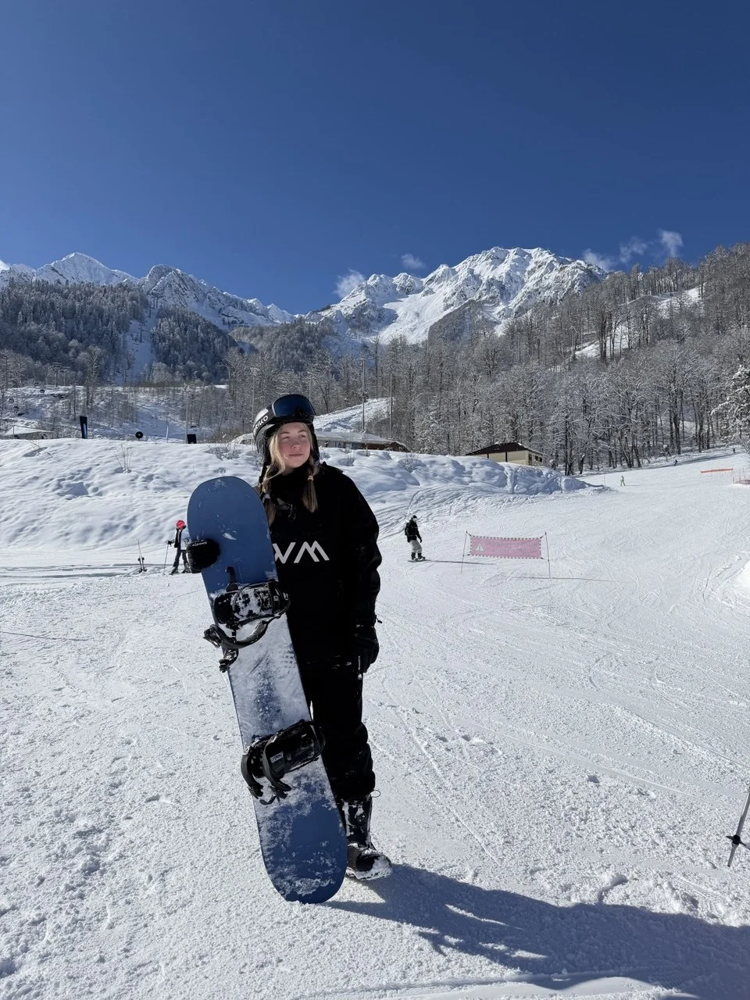
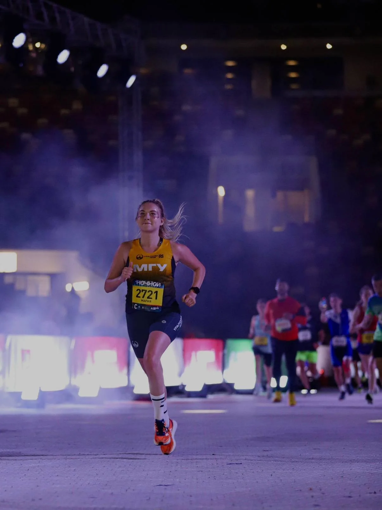
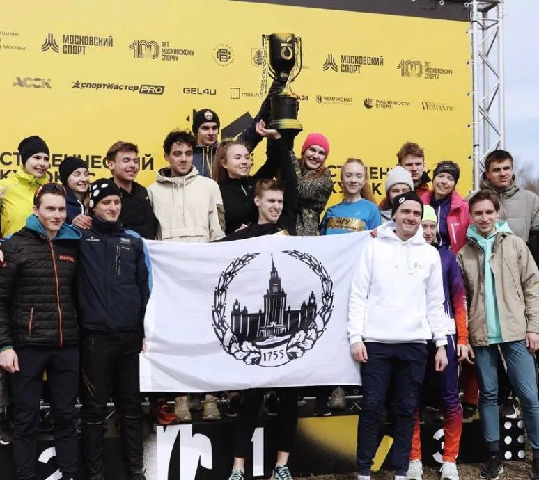

Обновлённая документация
Перенесла редактирование документации с команды разработки на продуктовую команду и сократила сроки внесения изменений (SLA).
Бизнес-аналитик
Развиваю платёжные интерфейсы интернет-эквайринга, а также улучшаю интеграции в CMS и CRM-системах (AmoCRM, Bitrix24, WordPress и др.). Улучшаю пользовательский опыт, в том числе в рамках личного кабинета мерчанта.

Перенесла редактирование документации с команды разработки на продуктовую команду и сократила сроки внесения изменений (SLA).

Реализовала платёжные сценарии, чтобы ускорить разработку и улучшить пользовательский опыт.
Группа Т-банка
Платёжные интерфейсы интернет-эквайринга
Январь 2026 — настоящее время
Веду крупный проект кастомизации платёжных интерфейсов: на этапе discovery анализирую рынок, прорабатываю решение и формулирую чёткие бизнес-требования; на этапе delivery контролирую сроки и приоритизирую задачи в бэклоге по RICE. Благодаря приоритизации удалось привлечь 4 мерчанта L+ сегмента с суммарной прибылью 2,5 млн ₽ в месяц.
Реализовала рекуррентные платежи — УТП продукта: ранее на рынке CMS/CRM не было подобного решения. Благодаря реализации вебхуков (webhooks) удалось обеспечить автоматизированные списания по карточному токену. Функциональность привлекла 10+ мерчантов S–M сегмента и принесла дополнительную прибыль 300 тыс. ₽ в месяц.
Раньше редактирование публичной технической документации требовало участия команды разработки: это занимало время разработчиков и увеличивало сроки внесения изменений (SLA). Проанализировала рыночные решения и конкурентов, выбрала оптимальный фреймворк и перенесла на него документацию. Затем с помощью вайбкодинга реализовала no-code редактор, который позволяет продуктовой команде самостоятельно редактировать документацию.
ПАО СБЕРБАНК
Продуктовая команда Portal DA
Декабрь 2024 — январь 2026
Выявила проблему качества описаний объектов и инициировала интеграцию LLM Сбера.
Проанализировала пользовательские сценарии и дерево метрик. Оптимизация UX помогла снизить отказы на ключевых этапах.
Разработала BPMN- и UML-диаграммы процессов маркетплейса проблемных активов.
Sber AI
AI/ML и робототехника
Июнь 2024 — декабрь 2024
Исследовала AI/ML и международный рынок. Координировала сбор и анализ данных для отчётов по международным конференциям. Проанализировала сегменты робототехники и выделила перспективные направления развития продуктового портфеля.
Экономический факультет
2025–2027
Магистратура
2021–2025
Бакалавриат






1 / 5